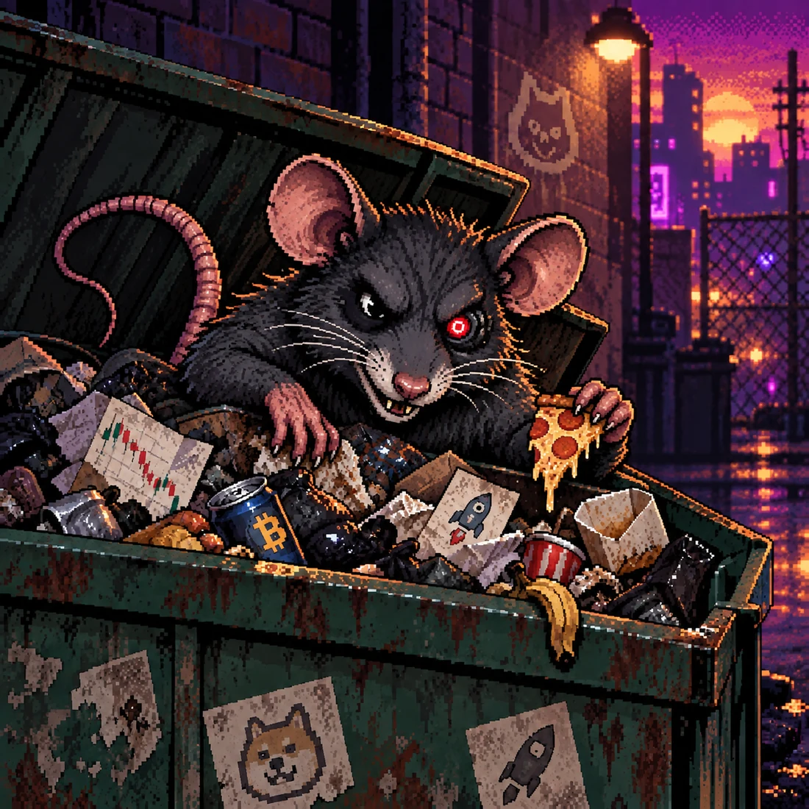
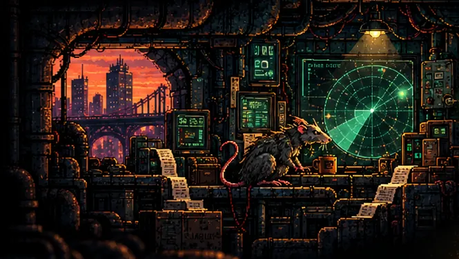

A fresh launch shares a Pons-reported deployer with earlier indexed launches.
FRESH LAUNCHES. OLD TRAILS. ONE NOSY RAT.
THE RATFOUND SOMETHING.↗
New launches hit the dumpster every day. BINRAT remembers the trails they leave behind.
When the same Pons-reported deployer shows up again, the Rat pulls the older receipts so you can decide whether the trail is worth digging.
+
DON'T TRUST THE RAT. CHECK THE RECEIPT.
No score. No buy call. No human identity inference.

FIELD NOTES / 001THE RESIDENT
THE RECEIPTS STAY.PONS
4663
WHY IT SURFACED / RECEIPT-BACKED
CHECKING THE OLD BAGS…
RAT IS DIGGING FOR A REPEAT TRAIL…
02 / TELEGRAM SCOUT
DON'T LIVE IN THE TERMINAL.
THE RAT DOES.
Telegram tells you when to care. Web BINRAT shows you everything worth knowing.
Find something worth watching. Leave a tripwire. Go do literally anything else. If that watched Pons-reported deployer launches again, the Rat brings you back to the case.
Event-driven. User-requested. No fake urgency. No engagement pings.
DISCOVER→DIG→WATCH→LEAVE→SQUEAK→OPEN CASE
@BINRATBOT / PRODUCT FLOWNOT A LIVE ALERT
A future indexed launch will bring you back.
A watched reported deployer showed up again.
03 / DOWN THE RAT HOLE
THIS ISN'T
JUST A SCANNER.
The Rat starts by catching launches. Then it remembers, watches, hunts, organizes and eventually takes bounded cases on its own.
CHECKING CAPABILITY MANIFEST
/api/capabilities

01
SNIFF
THE RAT CATCHES THE LAUNCH.
Find the launch and preserve the first receipt before the trail gets rewritten.
Pons Live Intelligence
RATS
DIG
Rat Radar
02
REMEMBER
SITES VANISH. THE TRAIL DOESN'T.
Keep the history, replay what was knowable at the time, and preserve evidence that later disappears.
Launch Memory
Trash Trails
Replay Lab
Dead Drops
03
WATCH
LEAVE A TRIPWIRE IN THE TRASH.
Notice when observed structure moves again without turning alerts into trading recommendations.
Rat Watch
Observation Alerts
Trash DNA Tripwires
Webhook Alerts
04
HUNT
POINT THE RATS AT SOMETHING WORTH DIGGING.
Turn curiosity and degen energy into bounded evidence work.
Trash DNA
Trash Hunts
Trash Bounties
Dumpster Raids
Feed the Rat
Bounty Boost
Case Sponsor
DEGEN DECIDES ATTENTION. RECEIPTS DECIDE TRUTH.
05
ORGANIZE
USEFUL WORK EARNS A RECEIPT.
Coordinate contributors without letting money, popularity or token balance buy factual authority.
Rat Credits
Proof of First
Rat Reputation
Case Files
Right of Reply
Rat Den
06
AUTONOMOUS RAT
GIVE IT A CASE. IT COMES BACK WITH RECEIPTS.
Automation can investigate, replay and distribute evidence. It never becomes evidence authority itself.
Autonomous Rat
Rat Machine
Rat Lab
Rat API
Rat Nodes
LAST INTO THE BINLoading index receipt…
01 / THE DUMPSTER
HOT GARBAGE.
CONNECTING
PONS 4663
WAITING FOR CHECKPOINT
Loading bags…WAITING FOR INDEX
+
Coverage describes the record, never the token. Open a bag to inspect the evidence.
04 / HOW HE DIGS
THE RAT DOES NOT GUESS.
01
BAG HITS BIN
Capture the exact launch event, block, transaction, token and Pons-reported deployer address.
INPUT / LAUNCH EVENT
02
FOLLOW THE SMELL
Link that reported deployer address to earlier Pons launches without pretending it proves a human identity.
LINK / REPORTED ADDRESS
03
DIG FOR SCRAPS
Collect factual observations: prior outcomes, distribution, metadata and anything still unresolved.
RECORD / OBSERVATIONS
04
KEEP THE RECEIPT
Bind the result to evidence and coverage so the joke can never outrank the record underneath it.
OUTPUT / BOUND EVIDENCE05 / DUMPSTER LEDGER
FOLLOW THE MONEY.
DON'T INVENT IT.
Loading the canonical pre-launch funding state. Missing authority stays missing; fixture money never becomes production truth.
Loading capability manifest…
Loading capability manifest…
Loading capability manifest…
Accounting authority is separate from presentation. Unknown intent remains uncategorized.
06 / TOKEN STATUS
USEFUL RAT.
UNRELEASED COIN.
The dumpster comes first. The evidence stays public. A token should unlock better tools for digging.
$BINRAT IS NOT LIVE.WHAT THE RAT MAY UNLOCK
PLANNED / NOT LIVE
PUBLIC
HOT GARBAGE feed
Public receipts
Basic Trash Trails
POTENTIAL
HOLDER / PRO
HOLDER / PRO
Real-time alerts & watchlists
Deeper trails & saved
investigations
Exports, API limits & advanced filters
A direction, not a launch promise. Access, depth and convenience may differ. Factual evidence never does.
CONTRACTNO CONTRACT PUBLISHED
PRESALENO PRESALE
WALLETNO WALLET CONNECTION
NO OFFICIAL BINRAT CONTRACT EXISTS. Any circulating address is not an
official BINRAT contract.
CLAIM BOUNDARY
THE JOKE IS THE RAT.
THE RECORD IS THE AUTHORITY.
BINRAT reports what he found. It does not prove a token is safe, a creator is honest, two addresses belong to the same human, or a price will go up. Missing evidence stays missing.